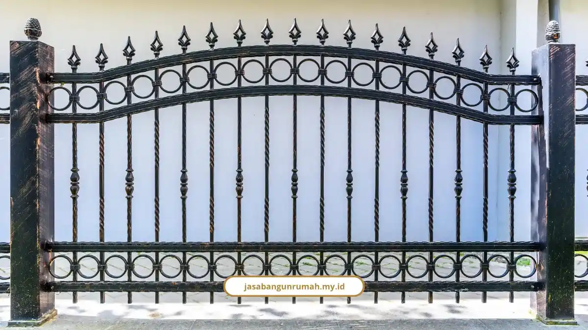

Daftar Isi
- Apa Standar Bangunan Rumah Subsidi?
- Apa Aturan 5 Tahun Pertama Rumah Subsidi?
- Renovasi Apa Saja yang Boleh dan Dilarang?
- Kapan Renovasi Rumah Subsidi Butuh PBG?
- Apa Sanksi Kalau Melanggar Aturan Renovasi Rumah Subsidi?
- Bisakah Renovasi Rumah Subsidi Dibiayai KRR Tapera?
- Siap Renovasi Rumah Subsidi Sesuai Aturan?
- FAQ
Syarat renovasi rumah subsidi: lapor ke bank, jangan ubah fasad, tunggu lima tahun untuk renovasi besar. Dapur belakang, pagar, dan kanopi boleh lebih awal.
Di bawah ini ada daftar renovasi yang diizinkan dan dilarang, urusan PBG yang memakan sekitar 20 sampai 21 hari kerja, sanksi jika melanggar, serta opsi pembiayaan resmi Kredit Renovasi Rumah (KRR) Tapera Rp60 juta sampai Rp71 juta.
Apa Standar Bangunan Rumah Subsidi?
Rumah subsidi berdiri di atas tanah 60 sampai 200 m² dengan luas bangunan 21 sampai 36 m². Aturannya dikelola Kementerian PUPR dan bank penyalur seperti BTN.
- Rumah wajib difungsikan sebagai tempat tinggal pribadi.
- Dilarang dijadikan tempat usaha komersial, seperti ruko, kafe, atau gudang.
- Dilarang disewakan, misalnya sebagai kos-kosan.
- Penerima manfaat berpenghasilan maksimal Rp8.000.000 per bulan.
Apa Aturan 5 Tahun Pertama Rumah Subsidi?
Selama 5 tahun pertama masa kredit, pemilik dilarang melakukan renovasi besar-besaran, merombak fasad secara ekstrem, atau menambah lantai. Rumah juga wajib dihuni sendiri.
Pemilik tidak boleh memindahtangankan atau meng-over kredit secara ilegal sebelum lima tahun. Setelah masa itu terlewati, ruang gerak renovasi menjadi lebih luas.
Renovasi Apa Saja yang Boleh dan Dilarang?
Dapur belakang, pagar, kanopi, teralis, dan perbaikan minor boleh dikerjakan. Perubahan fasad total, penambahan lantai 2, dan perluasan lahan di atas 200 m² dilarang.
Yang diperbolehkan:
- Dapur belakang: memakai sisa lahan belakang, biasanya 6x2 m atau 6x3 m.
- Pagar dan gerbang: berdiri tepat di dalam patok kavling atau Garis Sempadan Bangunan (GSB), tidak mencaplok jalan umum atau menutup drainase. Tinggi ideal 1,2 sampai 1,6 meter dengan desain semi-transparan.
- Kanopi carport dan teralis: rangka baja ringan atau besi, atap mengalir ke talang sendiri, tidak melebihi batas pekarangan.
- Perbaikan minor dan cat: memperbaiki atap bocor, tembok rembes, ganti keramik, atau mengecat ulang dengan warna senada.
Yang dilarang:
- Perubahan fasad depan total: mengubah arsitektur dan struktur fasad asli perumahan di tahun awal.
- Menambah lantai 2: dilarang di awal masa kredit (kurang dari 5 tahun) karena risiko struktur dan pelanggaran akad.
- Memperluas lahan di atas 200 m² atau merobohkan total bangunan awal.
Larangan ini sering terasa mengekang, tapi memang menjaga rumah tetap sesuai akad. Kalau rencana Anda masuk daftar dilarang, lebih baik ditunda daripada subsidi melayang.
Kapan Renovasi Rumah Subsidi Butuh PBG?
PBG dibutuhkan bila renovasi menambah luas bangunan, membongkar dinding struktural, atau menambah lantai. PBG adalah nama baru dari IMB dan diurus di DPMPTSP setempat.
Prosesnya sekitar 20 sampai 21 hari kerja. Berkas yang disiapkan:
- KTP
- PBB terakhir
- Bukti kepemilikan tanah
- IMB lama
- Gambar rencana bangunan skala 1:100
- Surat izin tetangga yang diketahui RT/RW
Pemilik juga wajib melapor dan berkonsultasi dengan bank penyalur KPR serta pengembang sebelum renovasi dimulai. Untuk panduan dari sisi biaya dan paket kerjanya, ada pembahasan jasa bangun dan renovasi rumah subsidi yang bisa jadi acuan.

Apa Sanksi Kalau Melanggar Aturan Renovasi Rumah Subsidi?
Sanksinya berlapis: bunga KPR subsidi dicabut dan berubah menjadi bunga komersial, teguran tertulis, penghentian pengerjaan, hingga penyegelan. Hak kepemilikan bahkan dapat disita jika terbukti memalsukan data atau mengubah fungsi hunian secara komersial.
- Sanksi finansial: bunga flat subsidi dialihkan ke suku bunga komersial yang lebih tinggi.
- Sanksi administratif: teguran tertulis, penghentian renovasi, sampai penyegelan.
- Penyitaan: hak kepemilikan dapat dicabut atau disita negara.
Bisakah Renovasi Rumah Subsidi Dibiayai KRR Tapera?
Bisa, bagi peserta Tapera yang sudah menjadi anggota minimal 1 tahun dan memiliki rumah subsidi. KRR Tapera memberi plafon Rp60 juta sampai Rp71 juta, bunga tetap 5%, tenor 5 sampai 9 tahun, dan cicilan sekitar Rp950.000 per bulan.
Prosesnya lewat Bank BTN, dengan verifikasi agunan 1 hari dan pencairan maksimal 5 sampai 7 hari kerja.
Agatis, guru SDN 1 Sandul, Kalimantan Tengah, memakai KRR Rp60 juta tenor 5 tahun untuk dapur, kamar mandi, dan teras. Katanya, "Prosesnya mudah dan cepat".
George Patton, ASN Kementerian Hukum dan HAM, memakai Rp71 juta untuk kanopi, teras, dan kamar mandi, sambil menekankan pentingnya melibatkan tukang lingkungan sekitar dalam menyusun RAB.
Muhammad Nauval Al Ammari, Direktur Operasi Pemanfaatan BP Tapera, menyatakan BP Tapera terus mengawal bank penyalur agar pembiayaan tepat sasaran.
Alexius Afrido Sitinjak, Branch Manager BTN KCP Palangka Raya, menjelaskan penilaian agunan hanya butuh 1 hari kerja dan dana cair dalam 5 sampai 7 hari kerja.
Siap Renovasi Rumah Subsidi Sesuai Aturan?
Tim Jasa Bangun Rumah menyusun RAB detail, membantu pengurusan PBG, dan mengerjakan renovasi sesuai batas aturan. Kami berdiri sejak 2010 dengan lebih dari 250 proyek, RAB transparan tanpa biaya tersembunyi, dan garansi struktur.
- Jasa renovasi bangunan gedung untuk dapur, kanopi, pagar, dan perbaikan
- Jasa kontraktor rumah untuk konstruksi standar SNI dengan manajemen proyek rapi
- Konsultasi teknis dan pengawasan konstruksi independen
Pesan konsultasi gratis lewat WhatsApp 0889-8964-3555 atau email info@jasabangunrumah.my.id.
Renovasi ringan seperti dapur belakang, pagar, kanopi, dan perbaikan minor boleh dilakukan dengan izin bank. Fasad, lantai tambahan, dan perombakan total harus menunggu lima tahun, atau tidak boleh sama sekali untuk perluasan lahan.
Urus PBG bila struktur atau luas bangunan berubah, dan pertimbangkan KRR Tapera untuk pembiayaan. Kirim rencana renovasi Anda ke Jasa Bangun Rumah, dan kami hitung RAB serta batas legalnya bersama.
FAQ
Referensi
- BP Tapera (Badan Pengelola Tabungan Perumahan Rakyat). Program Kredit Renovasi Rumah (KRR) Tapera dan Pembiayaan Perumahan MBR.
- Radar Kediri (Jawa Pos Group). Aturan Hukum dan Regulasi Renovasi Rumah Subsidi Menurut PUPR.
- PT Bank CIMB Niaga Tbk. Ketentuan KPR Subsidi, Jenis Renovasi Ringan, dan Aturan Masa Kredit.